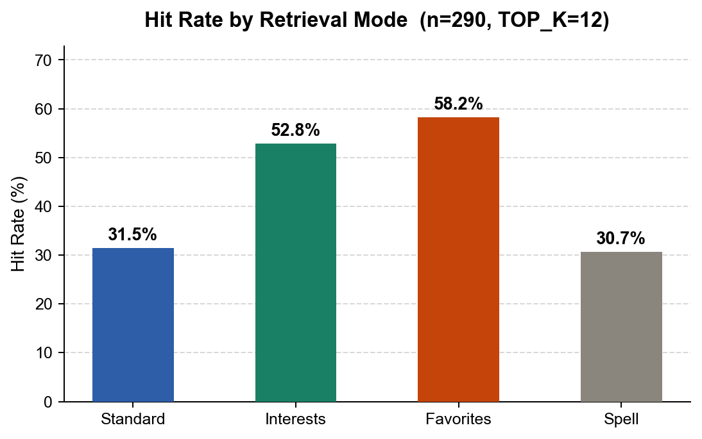

01 / FEATURED WORKTEAM GRADUATION PROJECT
NATURAL LANGUAGE PROCESSING · RECOMMENDATION
Al-Warraq↗
Helping students find the right academic books, faster.
A book discovery platform combining content-based recommendations, TF-IDF and cosine similarity, with a Flask backend and AI-assisted search. Developed collaboratively as a university graduation project.

REAL EVALUATION CHARTPERSONALIZATION PERFORMANCE